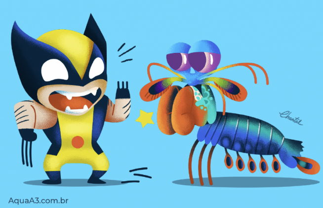

Fatos sobre o Stomatopoda
Informações gerais

| Reino | Filo | Subfilo | Classe | Subclasse | Ordem |
|---|---|---|---|---|---|
| Animalia | Artrópoda | Crustacea | Malacostraca | Hoplocarida | Stomatopoda |
Os Stomatopoda são uma ordem de Crustáceos marinhos que agrupa cerca de 400 espécies, aqui discutiremos uma espécie específica chamada Odontodactylus scyllarus, mais conhecida como camarão-louva-a-deus-palhaço ou lagosta-boxeadora, espécie nativa do Indo-Pacífico, de Guam até a África Oriental.
Visão além do alcance

Os olhos dos animais contém células chamadas de cones que os permitem enxergar as cores, os cães possuem dois tipos de cones, verde e azul, portanto, cachorros somente conseguem enxergar estas duas cores e suas variações, permitindo que também enxerguem um pouco de amarelo também.
Nós humanos possuímops três tipos de cones, verde, azul e vermelho. As variações dessas três cores é o que nos permite ver todas as cores que somos capazes de ver.
Enquanto isso, o camarão-louva-a-deus-palhaço não possui nem dois nem três tipos de cones, mas dezesseis tipos diferentes. Se nós com somente três tipos podemos ver tantas cores, imagine quantas milhares senão milhões de cores eles podem ver que nós não podemos. É impossível para o nosso cérebro sequer imaginar como são essas cores.
Força bruta

Essa visão tão privilegiada e colorida que possuem não os tornam animais de bem com a vida de forma nenhuma. Eles possuem outra característica bem inusitada que certamente vai te surpreender.
Os Stomatopoda possuem duas garras na frente de seu corpo que servem como armas brutais de caça. Estes animais aceleram na mesma velocidade que um tiro calibre vinte e dois e em menos de três milésimos de segundo podem atingir a presa com 1500 Newton de força. Para colocar isso em perspectiva, se nós humanos pudéssemos acelerar nossos braços a um décimo dessa velocidade, nós poderíamos arremessar uma bola de baseball para a órbita do planeta.
Eles se movem tão rápido que a água em volta deles ferve devido a fricção do corpo com a água em um processo chamado supercavitação. Quando as bolhas de cavitação colapsam elas produzem uma onda de choque sub-aquática que podem matar a presa mesmo que o camarão erre o alvo.
Referências
https://theoatmeal.com/comics/mantis_shrimp
https://pt.wikipedia.org/wiki/Odontodactylus_scyllarus